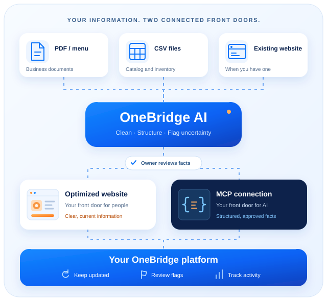

Your expertise, made accessible.
Jorge knows his products, prices, and inventory. OneBridge helps him share approved facts with people and compatible AI systems, without becoming an engineer.
THE TRUSTED CONNECTION
Help your business become more accessible to AI-assisted shopping, and help customers find accurate product information. OneBridge connects business-approved facts to a website for people and an MCP connection for compatible AI assistants.

A WIN FOR BOTH SIDES
The challenge is trustworthy AI product discovery: helping businesses be visible and accurately represented, while helping customers make better decisions.
Jorge knows his products, prices, and inventory. OneBridge helps him share approved facts with people and compatible AI systems, without becoming an engineer.
Maria needs the right part, at the right price. Current compatibility and availability information helps her avoid wasted time, money, and misleading answers.
HOW DO WE DO IT?
You manage the information.
OneBridge connects the pieces.
Bring your catalog, business details, or CSV. The product vision also supports PDFs and existing website information.
OneBridge AI organizes your facts and flags uncertainty. You review and approve the information before it is shared.
An optimized website MVP for people, plus an MCP connection for compatible AI assistants. Both use the same approved information.
Your platform keeps the two in sync. Update information, inspect flagged inconsistencies, and follow measured activity over time.
Truth before visibility. OneBridge helps make approved information accessible. It does not guarantee recommendations or independently certify every merchant claim.
FOR THE JUDGES
Follow Jorge’s guided live demo, or try setting up a business yourself.
Design concept only. These buttons are visual placeholders.
YOUR BUSINESS. YOUR INFORMATION.
See the idea in action, or start with what your business already knows.